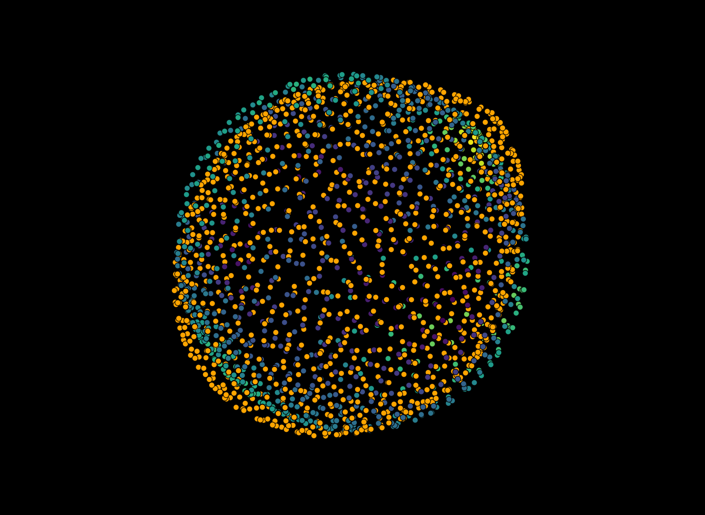

Analyzing spherical harmonics
Contents
3.2. Analyzing spherical harmonics#
Performing a spherical harmonics expansion on a given pointcloud yields a number of properties which can be used to analyze the obtained expansion (and thus, the original pointcloud) quantitiatively. This section describes the nature of the available measurements in napari stress.
3.2.1. Spherical harmonics expansion fit residue#
In practice, a spherical harmonics expansion only uses contributions up to a defined degree \(l\) (the order \(m\) is constrained by \(-l < m < l\)). This can have various reasons: For once, using high degrees for the expansion can lead to high computational expense whereas using only the first few orders may already lead to acceptable results. On the other hand, using high orders can lead to overfitting - using an infinitely high degree will lead to an expansion that describes each point perfectly, but does not capture the overall shape well anymore.
Depending on the highest used degree for the expansion, the expansion will lead to a residual error \(\Delta\):
\(\Delta = \vec{x}_i - f(\theta_i, \phi_i)\)
where \(f(\theta_i, \phi_i)\) is a superposition of multiple spherical harmonics base functions (see section about mathematical basics for details).
This example shows the result of a spherical harmonics expansion of low degree \(l\) for the approximation of a pointcloud:

The orange points show the input pointcloud consisting of points \(\vec{x}_i\), the color-coded points show the results of the spherical harmonics expansion with \(l<=1\) - which corresponds to only the basic modes of spherical harmonics being used - which in turn corresponds to a sphere. The color scale of the resulting sphere corresponds to the fit residue of the expansion for every point \(\Delta_i\).
3.2.2. Mean curvature#
An interesting parameter that can be obtained from a spherical harmonics expansion is the mean curvature. The concept is tightly linked to differntial geometry and allows several calculations. Napari-stress allows to calculate the mean curvature \(H_i\) at every point on the surface of a spherical harmonics expansion as well as calculating the globally averaged curvatures \(H_0\). The two implemented concepts for global curvatures include:
The arithmetic average \(H_{0, arithmetic~avg}\): This is simply the averaged curvature at every point: \(H_{0, arithmetic~avg} = \frac{1}{N}\sum^N_{i=0} H_i\) where \(H_i\) is the curvature at a given point.
The surface integrated curvature \(H_{0, surf~int}\): This is the ratio of the area of the obtained expansion and the surface of a unit sphere \(H_{0, surf~int} = \frac{A_{manifold}}{A_{Sphere}}\)
The stress paper uses the second definition (\(H_{0, surf~int}\)) for the description of curvatures oon the surface.
3.2.3. Gauss-Bonnet test#
The Gauss-Bonnet theorem allows to evaluate the quality of the obtained surface expansion quantitatively.
From Wikipedia: In the simplest application, the case of a triangle on a plane, the sum of its angles is 180 degrees. The Gauss–Bonnet theorem extends this to more complicated shapes and curved surfaces, connecting the local and global geometries.
In other words, the Gauss-Bonnet test gives you the possibility to measure whether the obtained surface expansion retains the required mathematical properties for such objects. This will be the case for simple shapes. However, trying to acquire a spherical harmonics expansion for highly irregular surfaces may well lead to high relative errors. Napari-stress offers the absolute \(\Delta_{Gauss-Bonnet, abs}\) and the relative \(\Delta_{Gauss-Bonnet, rel}\) value of this criterion; The relative error compares the absolute measured value to the respective result of an ideal sphere:
\(\Delta_{Gauss-Bonnet, rel} = \frac{\Delta_{Gauss-Bonnet, abs}}{4\pi}\)
To differentiate between a “good” and a “bad” surface expansion, the stress paper suggests a threshold value of \(1\cdot10^{-2}\) for the relative error.